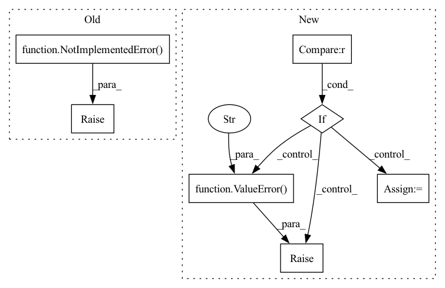

Pattern ID :20381
Before Change
if not matrix:
return pairwise_distance(x, y, p=2)
raise NotImplementedError()
@staticmethod
def manhattan(x: Tensor, y: Tensor, matrix=False) -> Tensor:
Compute manhattan distanceAfter Change
Tensor: shape (batch_size, batch_size) if `matrix` is `True`, (batch_size, 1) otherwise.
if not matrix:
if y is None :
raise ValueError("y cannot be None while matrix is False" )
distances = pairwise_distance(x, y, p=2)
else:
// Calculate dot product. Shape: (batch_size, batch_size)In pattern: SUPERPATTERN
Frequency: 4
Non-data size: 7
Instances Fragment ID: 66036891
Project Name: qdrant/quaterion
Commit Name: b1533b50ba29a80c44c1cd100527a7737e8313f5
Time: 2022-02-22
Author: yusufsarigoz@gmail.com
File Name: quaterion/loss/metrics.py
M Class Name: SiameseDistanceMetric
N Class Name: SiameseDistanceMetric
M Method Name: euclidean(4)
N Method Name: euclidean(3)
M Parent Class:
N Parent Class:
M File Name: quaterion/loss/metrics.py
N File Name: quaterion/loss/metrics.py
M Start Line: 11
M End Line: 23
N Start Line: 12
N End Line: 58
Before Change
if not matrix:
return torch.pairwise_distance(x, y, p=1)
raise NotImplementedError()
@staticmethod
def cosine_distance(x: Tensor, y: Tensor = None, matrix=False) -> Tensor:
Compute cosine distanceAfter Change
Tensor: shape (batch_size, batch_size) if `matrix` is `True`, (batch_size,) otherwise.
if not matrix:
if y is None :
raise ValueError("y cannot be None while matrix is False" )
distances = torch.pairwise_distance(x, y, p=1)
else:
Fragment ID: 66036890
Project Name: qdrant/quaterion
Commit Name: 032343e6e07e8e226b303d334d52acdab37106d9
Time: 2022-03-14
Author: yusufsarigoz@gmail.com
File Name: quaterion/loss/metrics.py
M Class Name: SiameseDistanceMetric
N Class Name: SiameseDistanceMetric
M Method Name: manhattan(3)
N Method Name: manhattan(3)
M Parent Class:
N Parent Class:
M File Name: quaterion/loss/metrics.py
N File Name: quaterion/loss/metrics.py
M Start Line: 61
M End Line: 73
N Start Line: 61
N End Line: 93
Before Change
// Preload all the elements you are going to need at inference.
// For instance your model, processors, tokenizer that might be needed.
// This function is only called once, so do all the heavy processing I/O here
raise NotImplementedError(
"Please implement SentenceSimilarityPipeline __init__ function"
)
def __call__(self, inputs: Dict[str, Union[str, List[str]]]) -> List[float]:
Args:After Change
):
// At the time, only public models from spaCy are allowed in the inference API.
full_model_path = model_id.split("/")
if len(full_model_path) != 2 :
raise ValueError(
f"Invalid model_id: {model_id}. It should have a namespace (:namespace:/:model_name:)"
)
namespace, model_name = full_model_path
package = f"https://huggingface.co/{namespace}/{model_name}/resolve/main/{model_name}-any-py3-none-any.whl"
cache_dir = os.environ["PIP_CACHE"]
subprocess.check_call(
[sys.executable, "-m", "pip", "install", "--cache-dir", cache_dir, package] Fragment ID: 66036889
Project Name: huggingface/huggingface_hub
Commit Name: 75e3d92b04b05c46924cfc334d12ae236a5d2a6a
Time: 2021-10-15
Author: 60084015+devpramod@users.noreply.github.com
File Name: api-inference-community/docker_images/spacy/app/pipelines/sentence_similarity.py
M Class Name: SentenceSimilarityPipeline
N Class Name: SentenceSimilarityPipeline
M Method Name: __init__(2)
N Method Name: __init__(2)
M Parent Class: Pipeline
N Parent Class: Pipeline
M File Name: api-inference-community/docker_images/spacy/app/pipelines/sentence_similarity.py
N File Name: api-inference-community/docker_images/spacy/app/pipelines/sentence_similarity.py
M Start Line: 15
M End Line: 17
N Start Line: 15
N End Line: 29
Before Change
)
else:
// anticipate common mistakes
raise NotImplementedError( "please set expanded=True")
def _get_nearest_labels_expanded(
self, vector, label_documents, label_field: str="label"After Change
similarity_metric: str="cosine",
):
// perform cosine similarity
if similarity_metric == "cosine" :
labels = self.cosine_similarity(
query_vector=vector,
vector_field=label_vector_field,
documents=label_documents
)
else:
raise ValueError("Only cosine similarity metric is supported at the moment." )
// for the label vectors
if expanded:
return labels Fragment ID: 66036884
Project Name: relevanceai/relevanceai
Commit Name: 843f1247ac121acd9428f7ff777a4eb1917ea692
Time: 2022-05-15
Author: jacky2wong@gmail.com
File Name: relevanceai/operations_new/label/base.py
M Class Name: LabelBase
N Class Name: LabelBase
M Method Name: _get_nearest_labels(7)
N Method Name: _get_nearest_labels(5)
M Parent Class: DocUtils
N Parent Class: DocUtils
M File Name: relevanceai/operations_new/label/base.py
N File Name: relevanceai/operations_new/label/base.py
M Start Line: 37
M End Line: 47
N Start Line: 71
N End Line: 91